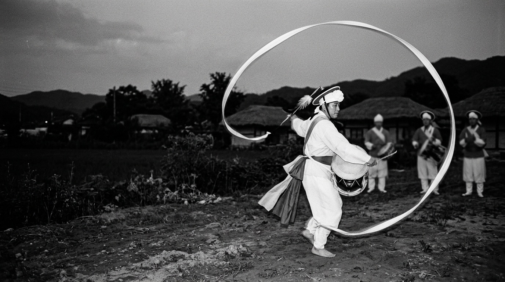
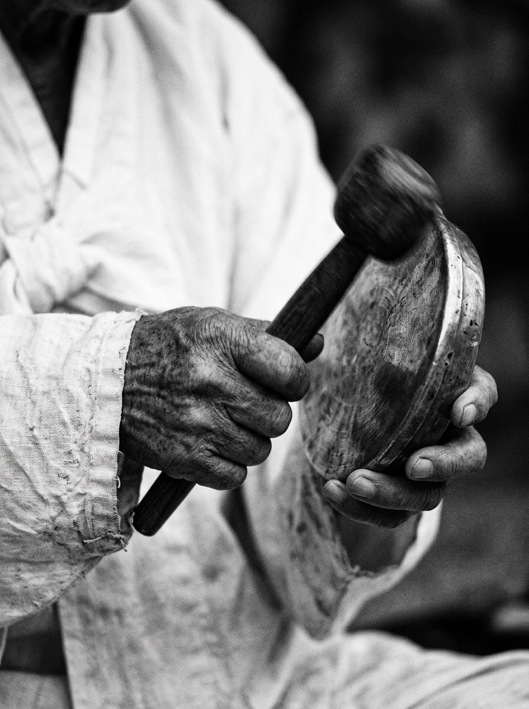
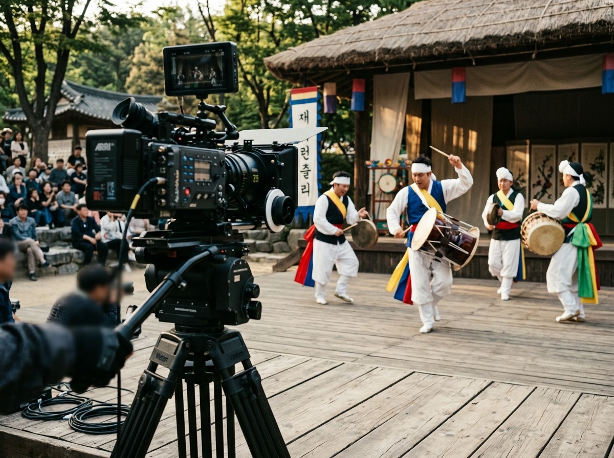
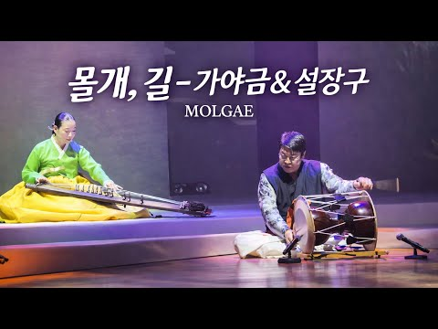
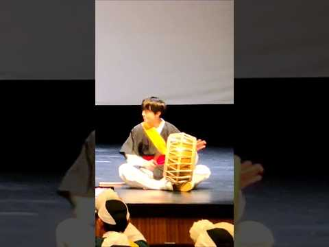
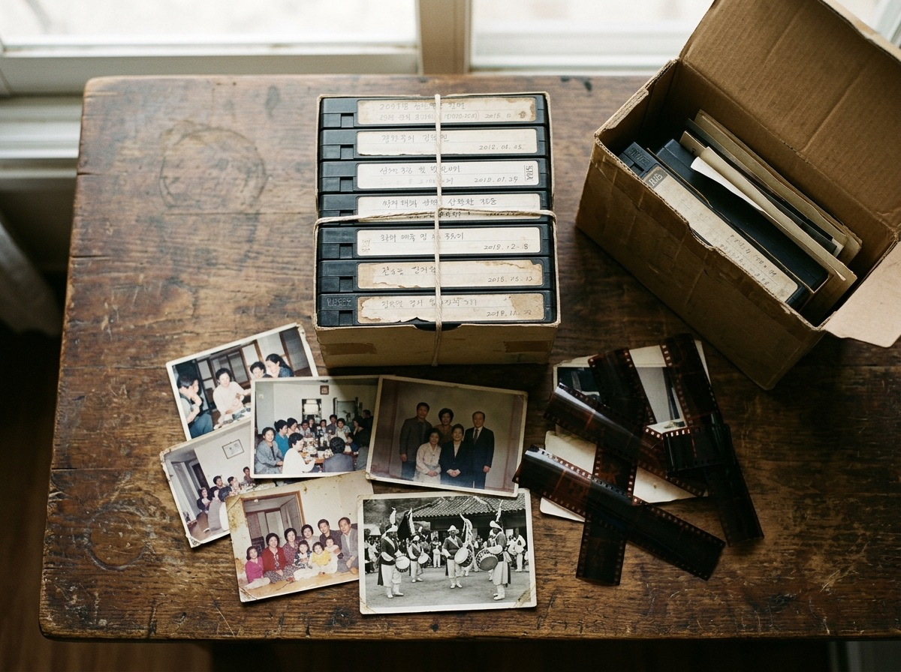

Full Film · 대형 축제
압도적 규모! 300인 설장구 공연
300 Performers Korean Traditional Arts Festival
300인의 연희자가 한 호흡으로 빚어내는 장대한 설장구 가락. 무대 전체의 웅장한 전경과 개별 연희자의 섬세한 손놀림을 균형 있게 담아낸 대형 공연 기록입니다.

농악 · 사물놀이 · 전통연희 기록
농사남 아카이브는 전통연희의 현장을 영상으로 기록하고,
오래된 사진과 비디오를 디지털로 되살려 다음 세대에 전합니다.

01소개 About
농사남 아카이브는 농악·사물놀이·전통연희를 중심으로 공연과 사람, 그리고 지역의 문화를 영상으로 기록하고 보존합니다.
유튜브 채널 ‘농사남(농악을 사랑하는 남자)’ 활동으로 전국 각지의 축제와 판을 누비며 축적해 온 촬영·편집·기록의 경험을 바탕으로, 판의 장단과 연희자의 호흡을 오롯이 이해하는 기록을 만듭니다. 나아가 집집마다 잠들어 있는 옛 사진과 비디오를 디지털로 옮겨, 언제든 다시 꺼내 볼 수 있는 소중한 자산으로 정리합니다.
What we keep
02서비스 Services
공연 당일의 촬영부터 편집, 온라인 게시용 콘텐츠, 그리고 오래 남길 보존용 파일까지. 작은 풍물패와 개인도 부담 없이 이용할 수 있도록 필요한 만큼 맞춤으로 제공합니다.

농악, 사물놀이, 전통연희, 지역축제와 공연을 촬영하고 기록용 풀영상과 하이라이트 영상으로 정밀하게 편집합니다.
기존 아날로그 테이프, 사진, 각종 기록물을 디지털 파일로 변환하고, 체계적인 분류와 편집을 거쳐 장기 보존용 데이터로 제작합니다.
유튜브 롱폼과 쇼츠 등 온라인 플랫폼에 최적화된 호흡으로 기획하고 편집하여 관객과 대중에게 가닿도록 만듭니다.
전통예술단체와 공연자의 활동 소개, 공연 실황 티저, 프로필 영상 콘텐츠를 제작해 더 넓은 무대와 관객을 연결합니다.
03영상 아카이브 Archive & Works
‘농사남’이 직접 현장을 누비며 기록하고 유통해 온 대표 영상입니다. 대형 야외 축제부터 무대 협연, 몰입도 높은 세로형 숏폼까지 현장의 열기를 그대로 전합니다.
농사남 유튜브 채널 바로가기 ↗300 Performers Korean Traditional Arts Festival
300인의 연희자가 한 호흡으로 빚어내는 장대한 설장구 가락. 무대 전체의 웅장한 전경과 개별 연희자의 섬세한 손놀림을 균형 있게 담아낸 대형 공연 기록입니다.

Full Film · 무대 협연Flower rain
가야금의 깊은 선율과 설장구의 다채로운 장단이 교차하는 실내 협연 무대. 소리의 셈여림과 연주자들의 호흡을 세밀하게 엮었습니다.

Shorts · 숏폼Korean Traditional Drum Performance
전통 북 가락의 폭발적인 에너지와 기백을 모바일 화면에 맞춤화된 세로 프레임으로 극대화한 글로벌 화제 콘텐츠입니다.

04디지털 복원 Restore
공연 실황이 담긴 오래된 테이프, 빛바랜 단체 사진, 필름 한 롤. 재생할 기기가 사라지기 전에, 소중한 기록을 디지털 파일로 옮겨 둡니다.
기록물의 종류와 상태를 확인하고 필요한 작업 범위를 함께 정합니다.
비디오테이프 및 옛 사진을 디지털 파일로 변환합니다.
흩어진 자료를 정리하고, 필요한 부분을 다듬어 찾아보기 쉽게 만듭니다.
오래 보관할 보존용 파일과 가족·단원과 나눌 공유용 파일로 전달합니다.
05작업 방식 Approach
단순한 영상 제작에 그치지 않습니다. 전통연희 현장과 공연의 특성을 깊이 이해하기에 판의 흐름과 장단의 변화, 연희자의 동선 속에서 놓쳐서는 안 될 결정적 순간을 담아냅니다.
공연과 축제, 연습과 사람까지 현장의 생생한 공기를 그대로 담습니다.
장단의 호흡에 맞춘 섬세한 리듬으로 기록과 이야기를 엮습니다.
롱폼·쇼츠·홍보 영상으로 더 많은 관객과 세상에 닿도록 만듭니다.
세월이 흘러도 언제든 다시 꺼내 볼 수 있는 디지털 아카이브로 남깁니다.
For — 함께하는 분들
규모가 작아도 괜찮습니다. 기록할 가치는 크기에서 오지 않으니까요.
농악단, 풍물단, 사물놀이팀, 전통연희 예술인, 지역 문화예술단체, 주민자치단체, 옛 기록을 간직한 개인
06여정 Journey
작게 시작해 꾸준히 쌓아 갑니다. 하나하나의 기록이 모여 언젠가 지역과 전국의 전통연희를 잇는 거대한 영상 아카이브가 되는 것, 그것이 저희의 목표입니다.
서비스 항목을 정립하고, 기존 ‘농사남’ 콘텐츠 활동과 연계한 탄탄한 포트폴리오를 쌓습니다.
전통연희단체·공연자와 촬영·편집·아카이빙 작업을 함께하며 이용자의 목소리를 바탕으로 서비스를 다듬습니다.
지역 문화단체·공공기관과 협업을 넓히고, 영상 복원·디지털화 및 온라인 콘텐츠 사업을 본격 확장합니다.
‘농사남 아카이브’를 대한민국 전통문화 기록과 미디어 콘텐츠를 대표하는 전문 브랜드로 완성합니다.
07문의 Contact
공연 촬영부터 옛 영상의 디지털 변환, 홍보 영상 제작까지. 어떤 이야기든 편하게 들려주세요. 확인 후 정성을 다해 연락드리겠습니다.